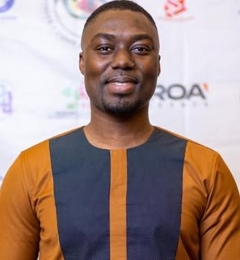

Research partners, project collaborators, and leadership colleagues
All CollaboratorsResearchProjectLeadership
Sort by:
Research Collaborators
0
Research
Dr. Linda Delali Fiasam
Lecturer and Researcher
Stirling College, Chengdu University
Specializes in deep learning, medical image analysis, computer vision, and domain generalization for the diagnosis of neurodegenerative diseases.
Research
Dr. Isaac Adjei-Mensah
Lecturer and Researcher
Yango University, Fuzhou
Specializes in medical imaging, federated learning, and scalable machine learning for privacy-preserving healthcare and intelligent diagnostic systems..
Research
Dr. Isaac Osei Agyemang
Lecturer & Research Associate
Stirling College, Chengdu University
Specializes in in deep learning, computer vision, and structural health monitoring with applications in micro-robotics and medical imaging..
Research
Dr. Adu Asare Baffour
Lecturer and Researcher
University of Missouri-Kansas City (UMKC)
Specializes in machine learning, image recognition, and TinyML for edge and embedded intelligent systems..
Research
Dr. Chiagoziem Chima
Lecturer and Researcher
Oxford Brookes College, CDUT
Research focuses on energy systems, renewable energy, biomedical signal processing, and applied interdisciplinary research.
Research
Dr. Kwame Omono Asamoah
Postdoctoral Researcher
Ningbo China Institute for Supply Chain Innovation
Research focuses on AI driven supply chain analytics, blockchain systems, and secure data driven decision making..
Research
Dr. Esther Stacy E.B. Aggrey
Lecturer and Researcher
Stirling College, Chengdu University
Specializes in machine learning, deep learning, medical imaging, explainable AI, and education in computing..
Project Collaborators
0
Project
Stephen Ouarcoo
System Engineer | IT Operations & Infrastructure Specialist
BrainWave AfricaTech Limited
Specializes in IT operations, infrastructure management, IT service delivery, data analysis, and scalable enterprise technology solutions.
Project
Frank Addo Mante
Vulnerability Management Engineer
Freelance, United States
Specializes in vulnerability management, network security, AI-driven automation, machine learning, and cybersecurity testing.
Leadership Collaborators
0
Leadership
Dr. Francisca Arboh
Lecturer and Researcher
Teesside University, UK
Specializes in organizational behaviour, HRM, leadership, employee well-being, and AI-driven digital workplace transformation.

Leadership
Felix Gyawu Addo
Researcher and CEO- Ecoamet Solutions
University of Ottawa, Canada
Specializes in environmental biotechnology, microbial ecology, wastewater surveillance, waste management, aquaculture, and ecological restoration.